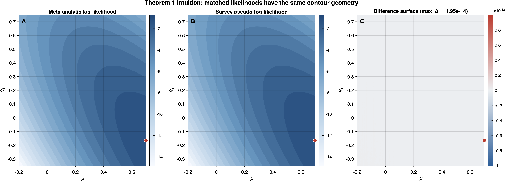

4 Theorem 1: Likelihood Isomorphism
This chapter establishes the foundational result of the paper: under exactness conditions (E1)–(E3) and (E5), the CE meta-analytic log-likelihood and the survey pseudo-log-likelihood differ by an additive constant that does not depend on the parameter vector \(\boldsymbol{\phi}\). Every subsequent equivalence result—sandwich, posterior, CCC—flows directly from this theorem.
The core insight can be previewed informally. Imagine two researchers analyzing the same dataset of clustered outcomes: a meta-analyst who treats each study’s sampling variance as a known quantity, and a survey statistician who specifies a pseudo-likelihood with unit weights and cluster-specific error variances. Under the exactness conditions, these two researchers are maximizing the same objective function. The additive constant \(c\) that separates their log-likelihoods plays no role in parameter estimation, inference, or model comparison — it is a notational artifact of two traditions that formalized the same data structure using different conventions.
4.1 Statement
Let \(\ell_{\mathrm{meta}}(\boldsymbol{\phi})\) denote the log-likelihood of the CE meta-analytic model (Definition 1) and let \(\ell^{(w)}_{\mathrm{surv}}(\boldsymbol{\phi})\) denote the pseudo-log-likelihood of the normal hierarchical survey model. Under conditions (E1)–(E3) and (E5), the isomorphism map \(\mathcal{T}: \sigma^2_{e,j} \mapsto \bar{s}_j^2,\; \tilde{w}_{ij} \mapsto 1\) yields: \[ \ell^{(w)}_{\mathrm{surv}}(\boldsymbol{\phi}) \;=\; \ell_{\mathrm{meta}}(\boldsymbol{\phi}) \;+\; c, \tag{4.1}\] where \(c = c(\{\sigma^2_{e,j}\}, \{s_{ij}^2\}, \{\tilde{w}_{ij}\}, \rho, \{n_j\})\) is a constant that does not depend on the parameter vector \(\boldsymbol{\phi} = (\boldsymbol{\beta}^{\intercal}, \boldsymbol{\theta}^{\intercal})^{\intercal}\).
Consequences:
Score equivalence. \(\nabla_{\boldsymbol{\phi}}\,\ell^{(w)}_{\mathrm{surv}}(\boldsymbol{\phi}) = \nabla_{\boldsymbol{\phi}}\,\ell_{\mathrm{meta}}(\boldsymbol{\phi})\).
Hessian equivalence. \(\nabla^2_{\boldsymbol{\phi}}\,\ell^{(w)}_{\mathrm{surv}}(\boldsymbol{\phi}) = \nabla^2_{\boldsymbol{\phi}}\,\ell_{\mathrm{meta}}(\boldsymbol{\phi})\).
MAP equivalence. Given the same prior \(p(\boldsymbol{\beta})\,p(\sigma^2_\theta)\) and \(\theta_j \mid \sigma^2_\theta \sim \textsf{N}(0, \sigma^2_\theta)\), the MAP estimates coincide: \(\hat{\boldsymbol{\phi}}_{\mathrm{surv}} = \hat{\boldsymbol{\phi}}_{\mathrm{meta}}\).
To make this concrete, Figure 4.1 displays the contour geometry of the meta-analytic log-likelihood and the survey pseudo-log-likelihood for a toy intercept-only example under the isomorphism map \(\mathcal{T}\). The difference panel is flat (up to numerical precision), confirming that the two objective functions differ only by a \(\boldsymbol{\phi}\)-free constant — exactly as Theorem 1 asserts.

The content of Theorem 1 can be stated informally: the two fields have been optimizing the same objective function. The meta-analytic log-likelihood and the survey pseudo-log-likelihood encode identical information about \(\boldsymbol{\phi}\); they differ only in their normalizing constants, which play no role in parameter estimation or inference.
Direction of the isomorphism. The map \(\mathcal{T}\) is constructive: given a survey pseudo-likelihood parameterized by \((\sigma^2_{e,j}, \tilde{w}_{ij})\), the identifications \(\sigma^2_{e,j} \mapsto \bar{s}_j^2\) and \(\tilde{w}_{ij} \mapsto 1\) produce the meta-analytic likelihood. Conversely, every CE meta-analytic likelihood can be embedded in the survey pseudo-likelihood framework by choosing \(\sigma^2_{e,j} = \bar{s}_j^2\) and \(\tilde{w}_{ij} = 1\). The correspondence is therefore bi-directional within the matched CE / compound-symmetric working-model class studied in Theorem 1. In that class, (E2), (E3), and (E5) are the essential identification requirements, while (E1) supplies the shared within-cluster covariance family used in Case 2 and in the downstream scalar-DEFF theory. For the special independence case \(\rho = 0\), the basic likelihood comparison does not need a separate covariance-shape assumption beyond the common design matrix and residual vector.
Proof roadmap. The proof exploits a simple but powerful structural feature: in both frameworks, the parameter vector \(\boldsymbol{\phi}\) enters the log-likelihood only through the residual vector \(\mathbf{r}_j = \mathbf{y}_j - \mathbf{X}_j\boldsymbol{\beta} - \theta_j\mathbf{1}_{n_j}\). The two likelihoods can therefore differ only in how they scale these residuals (through the variance parameters) and in their normalizing constants (through the log-determinants). The exactness conditions ensure that both scaling and normalization match up to a \(\boldsymbol{\phi}\)-free additive term. The argument is developed in two cases: \(\rho = 0\) (diagonal within-study covariance) and \(\rho > 0\) (compound-symmetric covariance), with the independence case presented first for pedagogical clarity.
4.2 Full Proof
Notation. Throughout the proof, \(\boldsymbol{\Sigma}_j^{\mathrm{work}}(\rho) = \sigma^2_j[(1-\rho)\,\mathbf{I}_{n_j} + \rho\,\mathbf{1}_{n_j}\mathbf{1}_{n_j}^{\intercal}]\) denotes the compound-symmetric within-study working covariance for study \(j\), where \(\sigma^2_j = \bar{s}_j^2\) in the meta-analytic framework and \(\sigma^2_j = \sigma^2_{e,j}\) in the survey framework.
We prove in two stages: first for the conditional-independence working model (\(\rho = 0\)), then for the compound-symmetric working model (\(\rho > 0\)). In both cases, the strategy is direct: write out the two log-likelihoods explicitly, apply (E1)–(E3) and (E5), and verify that they differ by a term not depending on \(\boldsymbol{\phi}\). Case 1 is a special case of Case 2 (set \(\rho = 0\) in the compound-symmetric formulas and the CS structure reduces to \(\sigma^2 \mathbf{I}_{n_j}\)), but we present both cases separately for pedagogical clarity: the independence case isolates the role of (E2) and (E3) without the algebraic overhead of the matrix inverse and log-determinant formulas.
4.2.1 Case 1: Independence working model (\(\rho = 0\))
Under condition (E5), the survey pseudo-log-likelihood with normal Level 1 errors is \[ \ell^{(w)}_{\mathrm{surv}}(\boldsymbol{\phi}) = \sum_{j=1}^{J}\sum_{i=1}^{n_j} \tilde{w}_{ij}\!\left[-\frac{1}{2}\log(2\pi\sigma^2_{e,j}) - \frac{(y_{ij} - \mathbf{x}_{ij}^{\intercal}\boldsymbol{\beta} - \theta_j)^2}{2\sigma^2_{e,j}}\right]. \tag{4.2}\]
Step 1 (Apply (E3): eliminate weights). [← Condition (E3) applied here: this is the critical step where the survey pseudo-log-likelihood reduces to the standard unweighted log-likelihood.] Under (E3), \(\tilde{w}_{ij} = 1\) for all \((i,j)\). The weights multiply through as unity: \[ \ell^{(w)}_{\mathrm{surv}}(\boldsymbol{\phi}) = \sum_{j=1}^{J}\sum_{i=1}^{n_j}\!\left[-\frac{1}{2}\log(2\pi\sigma^2_{e,j}) - \frac{(y_{ij} - \mathbf{x}_{ij}^{\intercal}\boldsymbol{\beta} - \theta_j)^2}{2\sigma^2_{e,j}}\right]. \]
Step 2 (Design matrices match). Both frameworks use the same design matrix \(\mathbf{X}_j\) with rows \(\mathbf{x}_{ij}^{\intercal}\), so the residuals \(r_{ij} = y_{ij} - \mathbf{x}_{ij}^{\intercal}\boldsymbol{\beta} - \theta_j\) are identical in both frameworks: \[ \ell^{(w)}_{\mathrm{surv}}(\boldsymbol{\phi}) = -\sum_{j=1}^{J}\frac{n_j}{2}\log(2\pi\sigma^2_{e,j}) - \sum_{j=1}^{J}\sum_{i=1}^{n_j} \frac{(y_{ij} - \mathbf{x}_{ij}^{\intercal}\boldsymbol{\beta} - \theta_j)^2}{2\sigma^2_{e,j}}. \tag{4.3}\]
The meta-analytic log-likelihood under the independence working model (\(\rho = 0\), so \(\boldsymbol{\Sigma}_j^{\mathrm{work}} = \bar{s}_j^2\,\mathbf{I}_{n_j}\)) is \[ \ell_{\mathrm{meta}}(\boldsymbol{\phi}) = \sum_{j=1}^{J}\!\left[-\frac{n_j}{2}\log(2\pi\bar{s}_j^2) - \sum_{i=1}^{n_j}\frac{(y_{ij} - \mathbf{x}_{ij}^{\intercal}\boldsymbol{\beta} - \theta_j)^2}{2\bar{s}_j^2}\right]. \tag{4.4}\]
Step 3 (Apply (E2): identify variances). Under the corrected formulation of (E2), the identification is cluster-specific: \(\sigma^2_{e,j} = \bar{s}_j^2\) for each \(j = 1, \ldots, J\). The quadratic terms in Equation 4.3 and Equation 4.4 become identical term by term: \[ \frac{(y_{ij} - \mathbf{x}_{ij}^{\intercal}\boldsymbol{\beta} - \theta_j)^2}{2\sigma^2_{e,j}} = \frac{(y_{ij} - \mathbf{x}_{ij}^{\intercal}\boldsymbol{\beta} - \theta_j)^2}{2\bar{s}_j^2}. \]
The log-determinant terms also match cluster by cluster: \[ -\frac{n_j}{2}\log(2\pi\sigma^2_{e,j}) = -\frac{n_j}{2}\log(2\pi\bar{s}_j^2). \]
Step 4 (Collect the constant). Subtracting the meta-analytic log-likelihood from the survey pseudo-log-likelihood: \[ \ell^{(w)}_{\mathrm{surv}}(\boldsymbol{\phi}) - \ell_{\mathrm{meta}}(\boldsymbol{\phi}) = \sum_{j=1}^{J}\!\left[-\frac{n_j}{2}\log(2\pi\sigma^2_{e,j}) + \frac{n_j}{2}\log(2\pi\bar{s}_j^2)\right] = \frac{1}{2}\sum_{j=1}^{J} n_j \log\!\left(\frac{\bar{s}_j^2}{\sigma^2_{e,j}}\right). \]
Under the strict form of (E2), \(\sigma^2_{e,j} = \bar{s}_j^2\) for every \(j\), so each term \(\log(\bar{s}_j^2 / \sigma^2_{e,j}) = 0\), and the entire sum vanishes. Define \[ c_1 \;=\; \frac{1}{2}\sum_{j=1}^{J} n_j \log\!\left(\frac{\bar{s}_j^2}{\sigma^2_{e,j}}\right), \] which depends only on \(\{\sigma^2_{e,j}\}\), \(\{\bar{s}_j^2\}\), and \(\{n_j\}\) — not on \(\boldsymbol{\phi}\). We conclude: \[ \ell^{(w)}_{\mathrm{surv}}(\boldsymbol{\phi}) = \ell_{\mathrm{meta}}(\boldsymbol{\phi}) + c_1. \tag{4.5}\]
This completes the proof for Case 1. \(\square\)
The independence case isolates the essential mechanism: condition (E2) aligns the variance denominators study by study, condition (E3) removes the survey weights, and the resulting constant \(c_1\) is simply the log-ratio of the two variance parameterizations summed over clusters. Case 2 extends this argument to the compound-symmetric setting, where the matrix structure introduces the CS inverse and log-determinant formulas, but the same alignment principle applies: all \(\boldsymbol{\phi}\)-dependent terms cancel, and the residual difference is absorbed into a cluster-additive constant.
4.2.2 Case 2: Compound-symmetric working model (\(\rho > 0\))
We now handle the general case where the within-cluster working covariance exhibits compound symmetry with correlation \(\rho \in (0, 1)\).
Step 1 (Write the clusterwise multivariate normal for both frameworks).
Under (E1), the within-cluster working covariance is \[ \boldsymbol{\Sigma}_j^{\mathrm{work}}(\rho) = \sigma^2_j\!\left[(1-\rho)\,\mathbf{I}_{n_j} + \rho\,\mathbf{1}_{n_j}\mathbf{1}_{n_j}^{\intercal}\right], \] where \(\sigma^2_j = \bar{s}_j^2\) in the meta-analytic framework and \(\sigma^2_j = \sigma^2_{e,j}\) in the survey framework. Both frameworks model \(\mathbf{y}_j \mid \boldsymbol{\beta}, \theta_j\) as multivariate normal with mean \(\mathbf{X}_j \boldsymbol{\beta} + \theta_j \mathbf{1}_{n_j}\) and covariance \(\boldsymbol{\Sigma}_j^{\mathrm{work}}(\rho)\). The cluster-\(j\) log-likelihood contribution in either framework is: \[ \ell_j(\boldsymbol{\phi}) = -\frac{n_j}{2}\log(2\pi) - \frac{1}{2}\log\!\left|\boldsymbol{\Sigma}_j^{\mathrm{work}}(\rho)\right| - \frac{1}{2}\mathbf{r}_j^{\intercal}\!\left[\boldsymbol{\Sigma}_j^{\mathrm{work}}(\rho)\right]^{-1}\!\mathbf{r}_j, \tag{4.6}\] where \(\mathbf{r}_j = \mathbf{y}_j - \mathbf{X}_j\boldsymbol{\beta} - \theta_j\mathbf{1}_{n_j}\) is the cluster-level residual vector.
Step 2 (CS inverse and log-determinant formulas). The compound-symmetric matrix \(\mathbf{A} = a[(1-\rho)\mathbf{I}_n + \rho\,\mathbf{1}_n\mathbf{1}_n^{\intercal}]\) with \(a > 0\) and \(\rho \in [0,1)\) has the well-known inverse: \[ \mathbf{A}^{-1} = \frac{1}{a(1-\rho)}\!\left[\mathbf{I}_n - \frac{\rho}{1 + (n - 1)\rho}\,\mathbf{1}_n\mathbf{1}_n^{\intercal}\right], \tag{4.7}\] and log-determinant: \[ \log|\mathbf{A}| = (n - 1)\log[a(1-\rho)] + \log[a(1 + (n-1)\rho)]. \tag{4.8}\]
These follow from the eigenstructure of the compound-symmetric matrix: \(\mathbf{A}\) has eigenvalue \(a(1-\rho)\) with multiplicity \((n-1)\) (eigenvectors orthogonal to \(\mathbf{1}_n\)) and eigenvalue \(a[1 + (n-1)\rho]\) with multiplicity \(1\) (eigenvector \(\mathbf{1}_n / \sqrt{n}\)).
Step 3 (Decompose the log-determinant difference). Applying Equation 4.8 to each framework:
Meta-analytic log-determinant: \[ \log\!\left|\boldsymbol{\Sigma}_j^{\mathrm{meta}}(\rho)\right| = (n_j - 1)\log[\bar{s}_j^2(1-\rho)] + \log[\bar{s}_j^2(1 + (n_j-1)\rho)]. \]
Survey log-determinant: \[ \log\!\left|\boldsymbol{\Sigma}_j^{\mathrm{surv}}(\rho)\right| = (n_j - 1)\log[\sigma^2_{e,j}(1-\rho)] + \log[\sigma^2_{e,j}(1 + (n_j-1)\rho)]. \]
The difference is: \[ \begin{aligned} \log\!\left|\boldsymbol{\Sigma}_j^{\mathrm{surv}}(\rho)\right| - \log\!\left|\boldsymbol{\Sigma}_j^{\mathrm{meta}}(\rho)\right| &= (n_j - 1)\log\!\left(\frac{\sigma^2_{e,j}}{\bar{s}_j^2}\right) + \log\!\left(\frac{\sigma^2_{e,j}}{\bar{s}_j^2}\right) \\ &= n_j \log\!\left(\frac{\sigma^2_{e,j}}{\bar{s}_j^2}\right). \end{aligned} \tag{4.9}\]
This quantity depends only on \(\sigma^2_{e,j}\), \(\bar{s}_j^2\), and \(n_j\) — not on \(\boldsymbol{\phi}\). Under the strict form of (E2), where \(\sigma^2_{e,j} = \bar{s}_j^2\) for every \(j\), the difference is zero.
Step 4 (Show the quadratic form difference is \(\boldsymbol{\phi}\)-free under (E2)). From Equation 4.7, the quadratic form in the cluster-\(j\) contribution is: \[ \mathbf{r}_j^{\intercal}\!\left[\boldsymbol{\Sigma}_j^{\mathrm{work}}(\rho)\right]^{-1}\!\mathbf{r}_j = \frac{1}{\sigma^2_j(1-\rho)}\!\left[\mathbf{r}_j^{\intercal}\mathbf{r}_j - \frac{\rho}{1 + (n_j - 1)\rho}\,(\mathbf{1}_{n_j}^{\intercal}\mathbf{r}_j)^2\right]. \tag{4.10}\]
Both \(\mathbf{r}_j^{\intercal}\mathbf{r}_j = \sum_{i=1}^{n_j}(y_{ij} - \mathbf{x}_{ij}^{\intercal}\boldsymbol{\beta} - \theta_j)^2\) and \(\mathbf{1}_{n_j}^{\intercal}\mathbf{r}_j = \sum_{i=1}^{n_j}(y_{ij} - \mathbf{x}_{ij}^{\intercal}\boldsymbol{\beta} - \theta_j)\) are functions of \(\boldsymbol{\phi}\), the data, and the design. The residual vector \(\mathbf{r}_j\) is the same in both frameworks (given that both use the same design matrix \(\mathbf{X}_j\) and the same linear predictor). The only difference in the quadratic form Equation 4.10 between the two frameworks is the leading coefficient \(1/[\sigma^2_j(1-\rho)]\):
- Meta-analysis: coefficient is \(1/[\bar{s}_j^2(1-\rho)]\)
- Survey: coefficient is \(1/[\sigma^2_{e,j}(1-\rho)]\)
Under (E2), \(\sigma^2_{e,j} = \bar{s}_j^2\), so the coefficients are identical and the quadratic forms match exactly. The difference is: \[ \mathbf{r}_j^{\intercal}\!\left[\boldsymbol{\Sigma}_j^{\mathrm{surv}}(\rho)\right]^{-1}\!\mathbf{r}_j - \mathbf{r}_j^{\intercal}\!\left[\boldsymbol{\Sigma}_j^{\mathrm{meta}}(\rho)\right]^{-1}\!\mathbf{r}_j = 0. \]
Step 5 (Combine and conclude). The cluster-\(j\) log-likelihood difference is: \[ \begin{aligned} \ell_j^{(w)}(\boldsymbol{\phi}) - \ell_j^{\mathrm{meta}}(\boldsymbol{\phi}) &= -\frac{1}{2}\!\left[\log\!\left|\boldsymbol{\Sigma}_j^{\mathrm{surv}}(\rho)\right| - \log\!\left|\boldsymbol{\Sigma}_j^{\mathrm{meta}}(\rho)\right|\right] \\ &\quad - \frac{1}{2}\!\left[\mathbf{r}_j^{\intercal}\!\left(\boldsymbol{\Sigma}_j^{\mathrm{surv}}\right)^{-1}\!\mathbf{r}_j - \mathbf{r}_j^{\intercal}\!\left(\boldsymbol{\Sigma}_j^{\mathrm{meta}}\right)^{-1}\!\mathbf{r}_j\right] \\ &= -\frac{n_j}{2}\log\!\left(\frac{\sigma^2_{e,j}}{\bar{s}_j^2}\right) + 0 \\ &\equiv c_j, \end{aligned} \] where \(c_j = -\frac{n_j}{2}\log(\sigma^2_{e,j}/\bar{s}_j^2)\) depends only on \(\sigma^2_{e,j}\), \(\bar{s}_j^2\), and \(n_j\) — not on \(\boldsymbol{\phi}\). Under strict (E2), \(c_j = 0\) for every \(j\).
Summing over \(j = 1, \ldots, J\): \[ \ell^{(w)}_{\mathrm{surv}}(\boldsymbol{\phi}) = \ell_{\mathrm{meta}}(\boldsymbol{\phi}) + c, \tag{4.11}\] with \[ c = \sum_{j=1}^{J} c_j = -\frac{1}{2}\sum_{j=1}^{J} n_j \log\!\left(\frac{\sigma^2_{e,j}}{\bar{s}_j^2}\right), \] which does not depend on \(\boldsymbol{\phi}\). \(\square\)
4.2.3 Proof of Consequences (a)–(c)
Since \(c\) does not depend on \(\boldsymbol{\phi}\), the three consequences follow by elementary calculus.
(a) Score equivalence. Differentiating Equation 4.1 with respect to \(\boldsymbol{\phi}\): \[ \nabla_{\boldsymbol{\phi}}\,\ell^{(w)}_{\mathrm{surv}}(\boldsymbol{\phi}) = \nabla_{\boldsymbol{\phi}}\,\ell_{\mathrm{meta}}(\boldsymbol{\phi}) + \underbrace{\nabla_{\boldsymbol{\phi}}\, c}_{= \,\mathbf{0}} = \nabla_{\boldsymbol{\phi}}\,\ell_{\mathrm{meta}}(\boldsymbol{\phi}). \]
The gradient of a constant is the zero vector. Since the score function is \(\nabla_{\boldsymbol{\phi}}\,\ell(\boldsymbol{\phi})\), the scores are identical at every \(\boldsymbol{\phi} \in \mathbb{R}^d\).
(b) Hessian equivalence. Differentiating a second time: \[ \nabla^2_{\boldsymbol{\phi}}\,\ell^{(w)}_{\mathrm{surv}}(\boldsymbol{\phi}) = \nabla^2_{\boldsymbol{\phi}}\,\ell_{\mathrm{meta}}(\boldsymbol{\phi}) + \underbrace{\nabla^2_{\boldsymbol{\phi}}\, c}_{= \,\mathbf{0}_{d \times d}} = \nabla^2_{\boldsymbol{\phi}}\,\ell_{\mathrm{meta}}(\boldsymbol{\phi}). \]
The Hessian of a constant is the zero matrix. The \(d \times d\) Hessian matrices are identical at every \(\boldsymbol{\phi}\).
(c) MAP equivalence. Given a common prior \(p(\boldsymbol{\beta})\,p(\sigma^2_\theta)\) with \(\theta_j \mid \sigma^2_\theta \sim \textsf{N}(0, \sigma^2_\theta)\), the posterior log-densities (up to the normalizing constant) are: \[ \begin{aligned} \log \pi^*_{\mathrm{surv}}(\boldsymbol{\phi}) &= \ell^{(w)}_{\mathrm{surv}}(\boldsymbol{\phi}) + \log p_{\mathrm{prior}}(\boldsymbol{\phi}) + \text{const}, \\ \log \pi_{\mathrm{meta}}(\boldsymbol{\phi}) &= \ell_{\mathrm{meta}}(\boldsymbol{\phi}) + \log p_{\mathrm{prior}}(\boldsymbol{\phi}) + \text{const}. \end{aligned} \]
By Equation 4.1: \[ \log \pi^*_{\mathrm{surv}}(\boldsymbol{\phi}) = \log \pi_{\mathrm{meta}}(\boldsymbol{\phi}) + c + \text{const}. \]
Since \(c\) is a constant with respect to \(\boldsymbol{\phi}\), the two posterior log-densities have the same gradient in \(\boldsymbol{\phi}\), hence the same critical points. The MAP estimates coincide: \(\hat{\boldsymbol{\phi}}_{\mathrm{surv}} = \hat{\boldsymbol{\phi}}_{\mathrm{meta}}\). \(\quad\blacksquare\)
Theorem 1 and its consequences complete the first link in the equivalence chain. The likelihood isomorphism guarantees that the two frameworks share identical scores, Hessians, and MAP estimates. The next two chapters extend this chain: Chapter 5 shows that the sandwich variance estimators — built from the same scores and Hessians — are also identical (Theorem 2), and Chapter 6 establishes that the posterior distributions and CCC-corrected posteriors coincide (Corollaries 1 and 2). Together, these results form the foundation for the DER framework developed in Part III.
4.3 Remarks
4.3.1 Remark 1 (On (E2) with heterogeneous \(\bar{s}_j^2\))
Condition (E2) in its corrected formulation requires cluster-by-cluster identification: \(\sigma^2_{e,j} = \bar{s}_j^2\) for each \(j\). This is stronger than requiring a single global parameter \(\sigma^2_e\) to match some summary of the \(\bar{s}_j^2\) values. The distinction is substantive.
If the survey model uses a single global parameter \(\sigma^2_e\) while the meta-analytic sampling variances \(\bar{s}_j^2\) vary across studies (the empirically typical case), the isomorphism breaks down in a specific and instructive way. The log-determinant difference Equation 4.9 becomes \[ \sum_{j=1}^{J}\frac{n_j}{2}\log\!\left(\frac{\sigma^2_e}{\bar{s}_j^2}\right), \] which is nonzero but still \(\boldsymbol{\phi}\)-free — so it contributes only to the additive constant \(c\). However, the quadratic form difference is more consequential. From Equation 4.10, the survey quadratic form uses coefficient \(1/[\sigma^2_e(1-\rho)]\) for every cluster, while the meta-analytic quadratic form uses \(1/[\bar{s}_j^2(1-\rho)]\), which varies by cluster. The difference is: \[ \sum_{j=1}^{J}\left(\frac{1}{\sigma^2_e} - \frac{1}{\bar{s}_j^2}\right)\frac{1}{1-\rho}\!\left[\mathbf{r}_j^{\intercal}\mathbf{r}_j - \frac{\rho}{1 + (n_j - 1)\rho}\,(\mathbf{1}_{n_j}^{\intercal}\mathbf{r}_j)^2\right]. \]
This expression depends on \(\boldsymbol{\phi}\) through the residuals \(\mathbf{r}_j\), so it cannot be absorbed into \(c\). The two likelihoods no longer differ by a parameter-free constant, and Theorem 1 fails. Strict (E2) — cluster-by-cluster identification \(\sigma^2_{e,j} = \bar{s}_j^2\) — is therefore necessary for exact isomorphism.
In practice, this means the survey model must be parameterized with cluster-specific Level 1 variances (each treated as known and set equal to \(\bar{s}_j^2\)) rather than a single pooled variance \(\sigma^2_e\). This is a modeling choice, not an inherent limitation: it corresponds to treating each study’s average sampling variance as a known design quantity, which is standard in the meta-analytic framework.
4.3.2 Remark 2 (On the Case structure)
Case 1 (\(\rho = 0\)) is a special case of Case 2 (\(\rho > 0\)). Setting \(\rho = 0\) in the compound-symmetric covariance yields \(\boldsymbol{\Sigma}_j^{\mathrm{work}}(0) = \sigma^2_j \mathbf{I}_{n_j}\), and the CS inverse Equation 4.7 reduces to \((\sigma^2_j)^{-1}\mathbf{I}_{n_j}\). The log-determinant Equation 4.8 simplifies to \(n_j \log(\sigma^2_j)\). All formulas in Case 2 specialize to those in Case 1.
We present both cases for two reasons. First, Case 1 isolates the essential mechanism of the isomorphism — the alignment of the quadratic forms under (E2) — without the algebraic machinery of the CS inverse and log-determinant. Second, the independence case (\(\rho = 0\)) is of substantive interest in meta-analysis: many applications set \(\rho = 0\) as the default working assumption (Pustejovsky and Tipton 2022), making Case 1 directly applicable to common practice.
4.3.3 Remark 3 (On the scope of the constant \(c\))
The constant \(c\) in Equation 4.1 depends on \(\{\sigma^2_{e,j}\}\), \(\{\bar{s}_j^2\}\), \(\rho\), and \(\{n_j\}\). Two observations are important for the downstream results:
\(c\) does not depend on \(\sigma^2_\theta\). The between-cluster variance \(\sigma^2_\theta\) enters the model through the Level 2 prior \(\theta_j \mid \sigma^2_\theta \sim \textsf{N}(0, \sigma^2_\theta)\), not through the Level 1 likelihood. Since \(c\) is defined as the difference between two Level 1 log-likelihoods, \(\sigma^2_\theta\) does not appear. This is essential for Corollary 1: when \(e^c\) cancels in Bayes’ formula, the cancellation holds for the joint posterior over \((\boldsymbol{\phi}, \sigma^2_\theta)\), not merely for the conditional posterior given \(\sigma^2_\theta\).
\(c\) decomposes additively over clusters. We have \(c = \sum_{j=1}^{J} c_j\) with each \(c_j\) depending only on quantities specific to cluster \(j\). This additive decomposition is exploited in Theorem 2, where we need the cluster-level score vectors (not just the total score) to be identical.